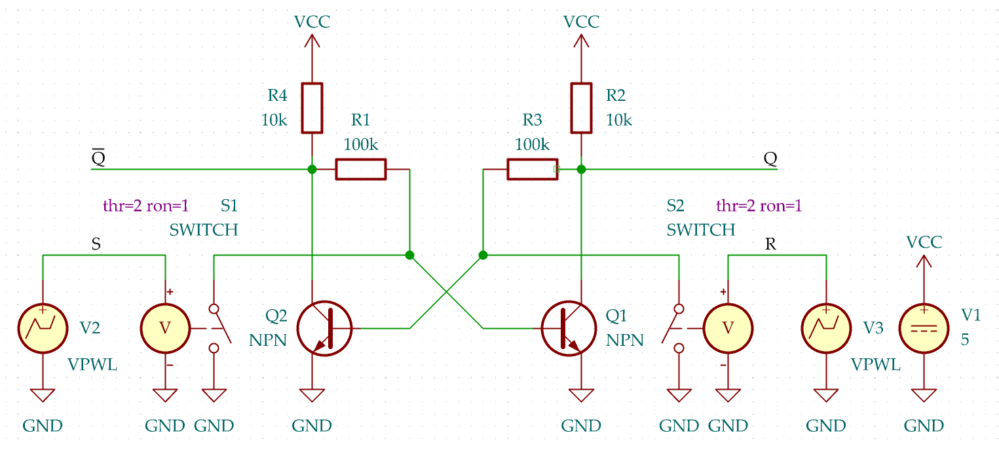
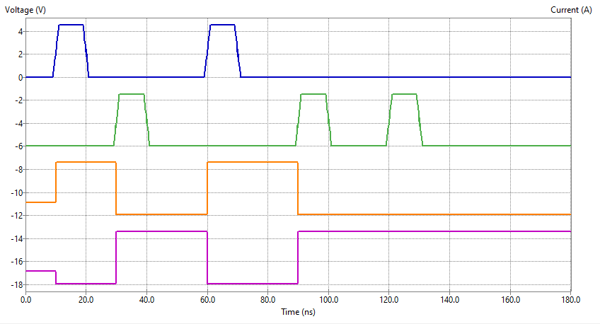
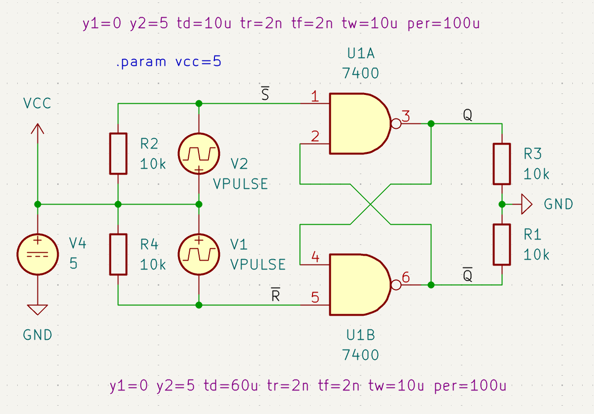
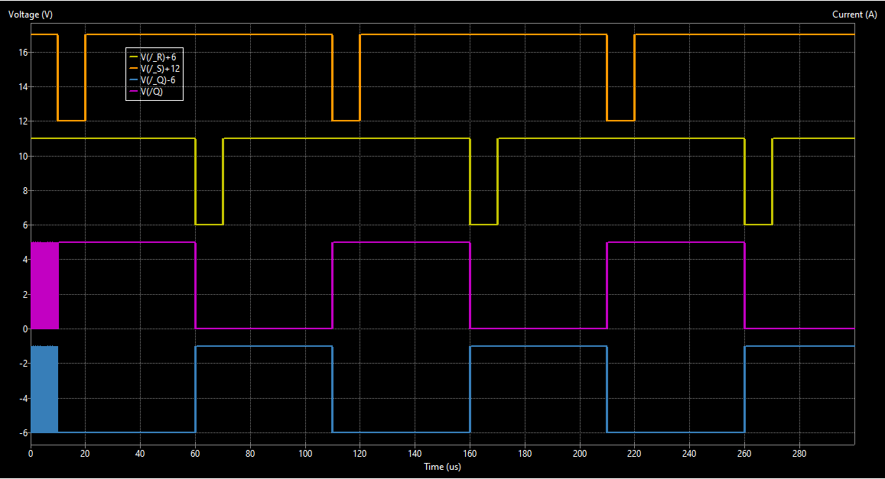
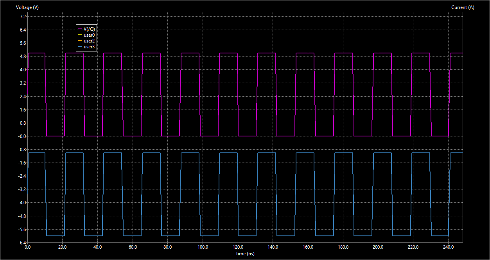
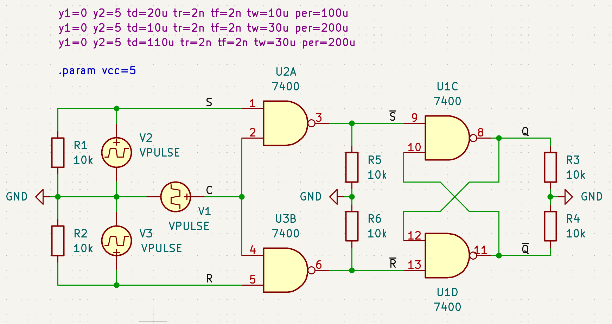
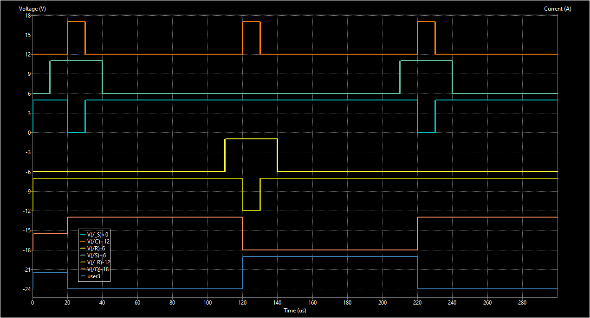
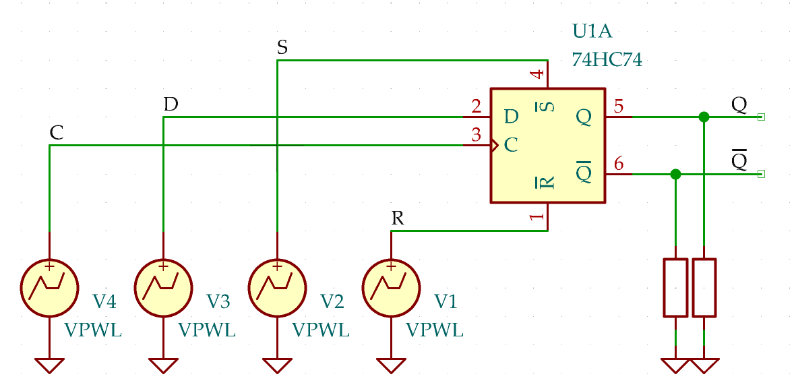
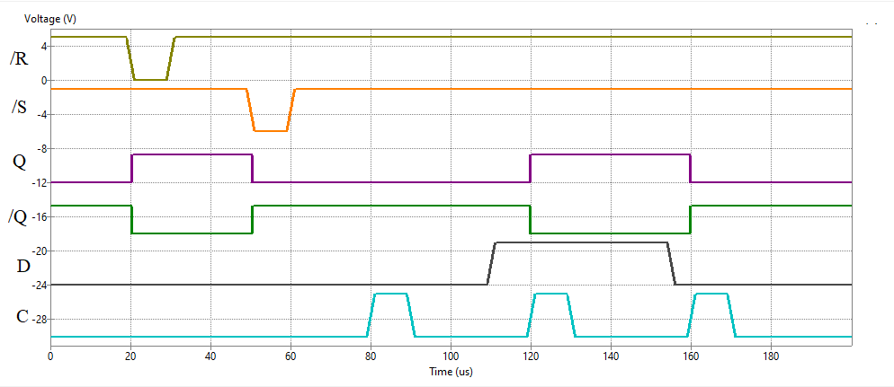

Flip-flops can be divided into two large groups, asynchronous transparent latches, and master-slave flip-flops with an input sampling stage.
The core structure is a two stage amplifier, where each state is inverting. A feedback line creates a positive feedback that ensures that the current state of the amplifier is maintained. An activated input line breaks the feedback loop so that the state of the associated stage is forced to change. The feedback loop then toggles the state of the other stage. As an effect, the system remains in the new state even if the input returns to an inactive value.


The NAND RS FF is an asynchronous transparent latch. If an input of a NAND goes low, its output will go high. The feedback line will set the other NAND output low, provided its input is inactive (high).

The following table shows some state transitions for the NAND RS flipflop:
| Step | S | R | Q | Q |
|---|---|---|---|---|
| 0 | 1 | 1 | x | x |
| 1 | 0 | 1 | 1 | 0 |
| 2 | 1 | 1 | 1 | 0 |
| 3 | 1 | 0 | 0 | 1 |
| 4 | 1 | 1 | 0 | 1 |
| 5 | 0 | 0 | 1 | 1 |
| 6 | 1 | 1 | ? | ? |
In step 0, the state of the flipflop is undetermined, both inputs are inactive (1). If one of the inputs is activated (steps 1 or 3), the output Q is set (step 1) or reset (step 3).
In both inputs are activated (step 5), both outputs go high. If both inputs are then deactivated (step 6), the state of the outputs is undetermined: There is an internal race condition. Therefore, the initial state of an RS flipflop should be determined by a reset circuit.

The simulation shows ringing outputs at the beginning, while both inputs are inactive. In practice, this should not happen because of natural asymmetries in the physical circuit.

The gated (or clocked) RS latch has two gates at the input. They disable the R and S inputs while the clock intput C is low.

The timing diagram shows the clock signal in the first row, followed by the S and S signals in the middle, the R and R signal, followed by Q and Q. We can see that the clock input "shapes" the flip-flop input signals, the flip-flop made of U2C and U2D behaves like the "regular" NAND RS latch.

The 74HC74 is a positive edge-triggered dual D-type flip-flop with asynchronous /set and /reset inputs.

There is the timing diagram:

The R and S signals show how to asynchronously reset or set the flip-flop state. Note that R and S should not both be active at the same time.
At 80 µs, the clock input C receives a rising edge, which causes the state of the D input to be accepted. Since Q is already low, nothing happes at the outputs.
Then D changes to high, and the following rising clock edge at 120 µs causes the outputs to toggle, and again at 160 µs.
Note that the state does not change after the rising clock edge, even if D toggles while C is high.